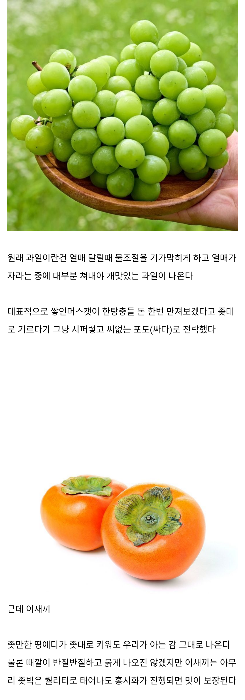

한국 과일 중 원탑 개씹튼튼 과일
댓글
나도 그런줄알았는데
태추단감 에이급 먹는데 씹사기 개고급과일이더라
감마다 좀 다르면 본문의 내용이 틀린거네?
본문은 홍시가 기준임
본문에서부터 ㅈ박은 퀄로 나오는 경우가 있다는걸 인정하는데 무슨..
샤인머스캣도 ㅈ대로 키운거는 당도만 떨어질 뿐이야. 비교할꺼면 ㅈ대로 키워도 저점 고점 별차이 없는 감자같은걸 가져와야지
혹시 평소에 과일 안먹고 삼?
저점의 급이 다른데;;
넌 글을 못 읽는거냐 아니면 감자를 과일로 알고 있는거냐? 누가 샤인머스캣 고저점 차이가 없다고 했냐? 당도차이가 끝이라고 했는데 그거 땜에 가격이 천차만별인건 알고 있다. 그런데 감도 비슷하게 고저점 차이가 난다면 비유가 잘못된거라니까? 물론 홍시로 가면 별 차이는 없을 수 있는데 그럴꺼면 감이 아니라 감자에 비유하는게 맞다니까?
샤인머스켓의 저점보다 감의 저점이 압도적으로 높다고 난독아;;; 너 한번만 더 헛소리 하면 먹금할꺼임
너가 고생이 많다
집에 사과가 있다니 대감집 노비구나!
떫은감은 맞말인데 단감은 꽤 공들여야 하지않나?
관리 안 한 밭에서 열린 단감도 홍시되면 다 먹을만하긴 함
상품성은 당연히 없는데
홍시도 조코 연시는 더 좋아!!
못생긴 감도 홍시만 되면 맛도리지
한국떫은감협회에서 관리함
이거 왜 진짜 있는 단체냐
아니 진짜있네
감 먹으면 난 변비가 장난 아니라서 못먹음 ㅠㅠ
그래.. 아직도 내가 과일로 보이나보지?
천혜향이 개쩔지않냐? 개나소나 키우는거같은데
숙성만 잘시키면 꽝없어.
내륙이나 강원도에서도 개나소나 키우기 가능?
개랑 소는 똥쌀줄만 알지 키우진 못하지
그럼 개랑 소 키울래
곶감 좋아하는데 비싸서 못먹
쩝 원래 우리나라는 앞마당에 감나무 하나 키우는게 국룰이었지
요새도 길가 돌아다니다가 주택가에 감나무 보이면 진짜 정겹더라.. 특히 열매 맺힌거나
옛날 얘기처럼 까치 먹으라고 이맘때쯤에 감 한두개 남겨놓은거 진짜 너무 정겨움 ㅋㅋ
오늘 감나무 열매열린밭을 버스기다리며 보고있었는데 까치하고 여러 새들와서 막 쪼아대던데 농장하시는 분들 참 대단하다는 생각듦 태풍오면 전멸이지 새떼관리안하면 상품성떨어지지
샤인머스캣 처음 나올때만 해도 망고맛 진하게 나는 달고 맛있눈 포도였는데 이젠 그 맛이 안남
감이랑 게장이랑 같이 먹으면 둘이 먹다 둘이 죽어도 모를 지경이라 하더라..
갑진년부터 게장은안먹는다카이…
아파트에서 키우는데 감 주렁주렁이라 따서 말려먹음 개떫어도 말리면 다사라짐
접목은 해야 해
많이먹음 변비걸림
감
걍 방치해놔도 알아서 익어서 땅에 떨어지는 자생력 보면 오지긴해.
집집마다 감나무 있는 달동네 있었는데 매 가을마다 땅이 감범벅이었음
시골가면 심지어 야생도 있음 근데 맛있음
단감이 홍시가 되나? 잘 썩어서 안될텐데
둘 다 된다는데 땡감으로 만들면 당도가 압도적으로 올라간다는데?
그래서 보통 땡감으로 만들지. 단감은 썩기 쉬워서
주말에 경주놀러갔는데 감이 아주 튼실하게 여기저기 주렁주렁 달려있던데
감나무 특) 모기가 존나 생김
ㄹㅇ?
아파트 2층까진 감나무 닿겠던데 ㅅㅂㅋㅋㅋㅋ
심 제거 안 하면 변비생겨서 먹기 귀찮음
홍시화 제어하고 싶제?
그래도 샤인머스켓이 일반 포도보단 훨씬 맛있잖아 싸져서 좋은데
얼리면 더 맛잇음 ㅎㅎ
집갔을 때 사과랑 감 있으면 사과만 먹음 노맛과일